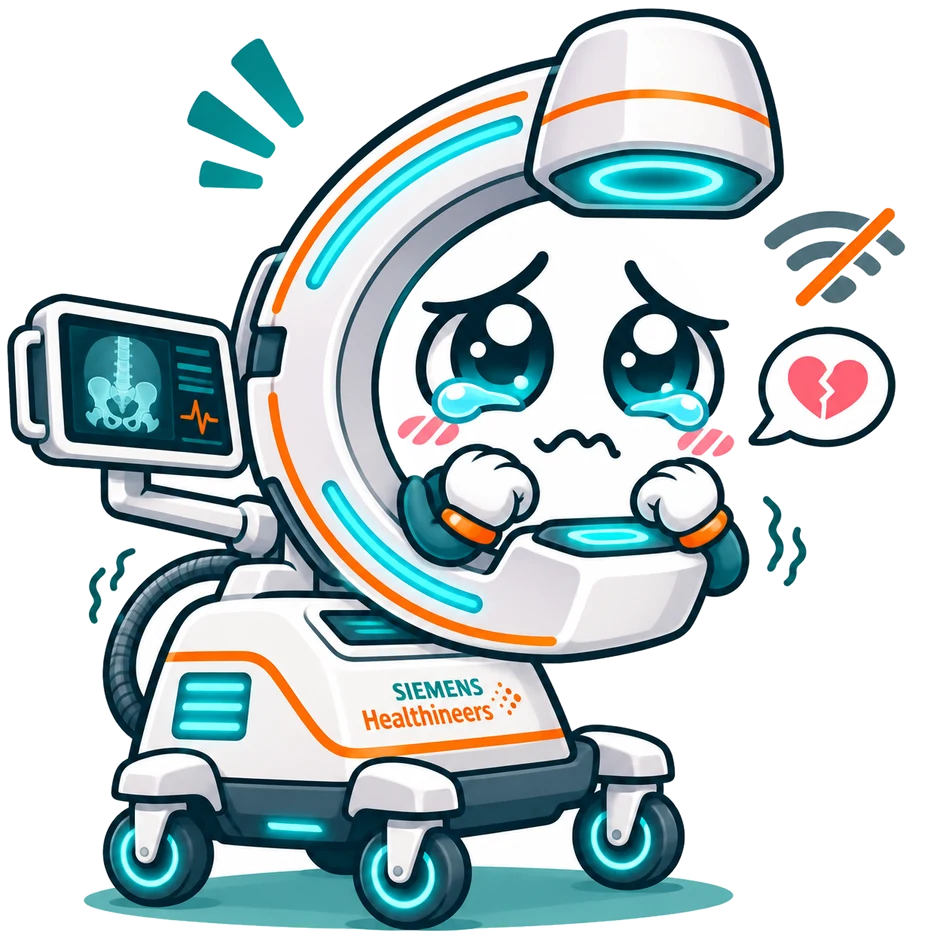

Let caremoving.
Behind every ready C-arm is a little care.
C-ARMAGOTCHI by Aloha RoboticsA working browser prototype. An ambitious next step.
FIG. 01 / ROOTED IN CARE ALOHA LAB
A LITTLE TROPICAL ENGINEERING
Wireframe ◇ Ⅱ
GOOD TECHNOLOGY. HUMAN TIMING. ↓ CHALLENGE 04 / INVISIBLE CONNECTIVITY
THE LITTLE GAP WITH A BIG JOB
An idle machineready.
Mobile C-arms are often parked, unplugged and out of sight. Updates wait. Logs stay on the machine. Everyone is busy caring for someone else.
A machine that asks. A moment that works. A person who says yes.
01 / FROM A NUDGE TO A CLOSED LOOP
EXPLORE THE CONCEPT
A little personality.A clear next step. Cio makes its needs visible.
01 Notice ♡ 02 Find a window ▦ 03 Offer the task ↗ 04 Connect + confirm ⌁ 05 Close the loop ✓

A LITTLE LONELY 01 / THE HUMAN INTERFACE
“A little attention?” C-ARMAGOTCHI gives the machine a personality. Its mood turns a hidden maintenance need into something a person can understand and act on.
Meet Cio in Care Companion ↗ Interactive prototype · invented device states
Personality on top.Rules underneath. The calendar isn’t just an animation.
See it. Click it. HTML, CSS and JavaScript power the companion, planning board and guided journeys. A deterministic rule engine checks whether a proposed update can start.
JavaScript Local state Rule tests
Inspect planner.js ↗ DESIGNED / NEXT INTEGRATION The last metre The proposed clinical node coordinates availability and requests. A robot could supply power and data; a local person checks the surroundings and approves the update.
Clinic node → Power + data → Human ✓
Explore the architecture ↗
THE ENGINEERING NOTE The browser demo is real. Hospital interfaces, autonomous robot operation and deployment are proposed integrations.
03 / THE OPEN NOTEBOOK
RESEARCH → DESIGN → CODE Go as deepyou like.
Less watching.More doing.